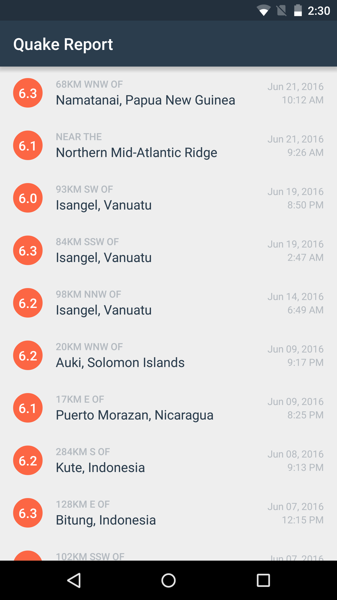

15. Networking in Quake Report App
Time to roll up your sleeves and start coding!
Modify the Quake Report app to make the network request to this URL. This query will provide you with the top 10 most recent earthquakes in the world with at least a magnitude of 6.
https://earthquake.usgs.gov/fdsnws/event/1/query?format=geojson&eventtype=earthquake&orderby=time&minmag=6&limit=10
When you receive the response, parse the JSON and then update the list in the app.
Tip #1: Try to compile and run the app as often as you can, as you make these incremental changes. Otherwise, you may have a lot of errors to fix at the very end.
Tip #2: Remember that you can refer back to the “Soonami” and “Did You Feel it” sample apps.
If you need more debugging tips, check out this discussion forum thread where other students post advice on how to get through this long coding task.
Networking in Quake Report App
SOLUTION:
- I did it!
Networking in Quake Report App - Solution
Setup
- First declare the internet permission in the AndroidManifest.xml file so that the app can access the network.
In AndroidManifest.xml:
<uses-permission android:name="android.permission.INTERNET"/>- Then store the String URL that we gave you, as a static final constant in the EarthquakeActivity file. We use the “private” access modifier on the variable because no other classes except for the EarthquakeActivity that need to reference it.
In EarthquakeActivity.java:
/** URL for earthquake data from the USGS dataset */
private static final String USGS_REQUEST_URL =
"https://earthquake.usgs.gov/fdsnws/event/1/query?format=geojson&orderby=time&minmag=6&limit=10";- Based on the solution in the last quiz, we define the skeleton (or bare-bones outline) of the EarthquakeAsyncTask as an inner class to the EarthquakeActivity class.
In EarthquakeActivity.java:
private class EarthquakeAsyncTask extends AsyncTask<String, Void, List<Earthquake>> {
@Override
protected List<Earthquake> doInBackground(String... urls) {
}
@Override
protected void onPostExecute(List<Earthquake> data) {
}
}In the EarthquakeAsyncTask doInBackground() method, we need to execute the network request. There’s no code in our app that does that yet.
- Open up the QueryUtils.java file. Add in the following new helper methods. These are basically copied and pasted from the “Soonami” and “Did You Feel It?” apps that we used earlier.
In QueryUtils.java:
/**
* Returns new URL object from the given string URL.
*/
private static URL createUrl(String stringUrl) {
URL url = null;
try {
url = new URL(stringUrl);
} catch (MalformedURLException e) {
Log.e(LOG_TAG, "Problem building the URL ", e);
}
return url;
}
/**
* Make an HTTP request to the given URL and return a String as the response.
*/
private static String makeHttpRequest(URL url) throws IOException {
String jsonResponse = "";
// If the URL is null, then return early.
if (url == null) {
return jsonResponse;
}
HttpURLConnection urlConnection = null;
InputStream inputStream = null;
try {
urlConnection = (HttpURLConnection) url.openConnection();
urlConnection.setReadTimeout(10000 /* milliseconds */);
urlConnection.setConnectTimeout(15000 /* milliseconds */);
urlConnection.setRequestMethod("GET");
urlConnection.connect();
// If the request was successful (response code 200),
// then read the input stream and parse the response.
if (urlConnection.getResponseCode() == 200) {
inputStream = urlConnection.getInputStream();
jsonResponse = readFromStream(inputStream);
} else {
Log.e(LOG_TAG, "Error response code: " + urlConnection.getResponseCode());
}
} catch (IOException e) {
Log.e(LOG_TAG, "Problem retrieving the earthquake JSON results.", e);
} finally {
if (urlConnection != null) {
urlConnection.disconnect();
}
if (inputStream != null) {
// Closing the input stream could throw an IOException, which is why
// the makeHttpRequest(URL url) method signature specifies than an IOException
// could be thrown.
inputStream.close();
}
}
return jsonResponse;
}
/**
* Convert the {@link InputStream} into a String which contains the
* whole JSON response from the server.
*/
private static String readFromStream(InputStream inputStream) throws IOException {
StringBuilder output = new StringBuilder();
if (inputStream != null) {
InputStreamReader inputStreamReader = new InputStreamReader(inputStream, Charset.forName("UTF-8"));
BufferedReader reader = new BufferedReader(inputStreamReader);
String line = reader.readLine();
while (line != null) {
output.append(line);
line = reader.readLine();
}
}
return output.toString();
}- Modify the extractEarthquakes() method that handles JSON parsing. I renamed it to extractFeatureFromJson() and to take a JSON response String as input. Instead of hardcoding the extractFeatureFromJson() method to only be able to parse the hardcoded SAMPLE_JSON_RESPONSE String, this method becomes more reusable in different contexts if we accept a String input.
In QueryUtils.java:
/**
* Return a list of {@link Earthquake} objects that has been built up from
* parsing the given JSON response.
*/
private static List<Earthquake> extractFeatureFromJson(String earthquakeJSON) {
// If the JSON string is empty or null, then return early.
if (TextUtils.isEmpty(earthquakeJSON)) {
return null;
}
// Create an empty ArrayList that we can start adding earthquakes to
List<Earthquake> earthquakes = new ArrayList<>();
// Try to parse the JSON response string. If there's a problem with the way the JSON
// is formatted, a JSONException exception object will be thrown.
// Catch the exception so the app doesn't crash, and print the error message to the logs.
try {
// Create a JSONObject from the JSON response string
JSONObject baseJsonResponse = new JSONObject(earthquakeJSON);
// Extract the JSONArray associated with the key called "features",
// which represents a list of features (or earthquakes).
JSONArray earthquakeArray = baseJsonResponse.getJSONArray("features");
// For each earthquake in the earthquakeArray, create an {@link Earthquake} object
for (int i = 0; i < earthquakeArray.length(); i++) {
// Get a single earthquake at position i within the list of earthquakes
JSONObject currentEarthquake = earthquakeArray.getJSONObject(i);
// For a given earthquake, extract the JSONObject associated with the
// key called "properties", which represents a list of all properties
// for that earthquake.
JSONObject properties = currentEarthquake.getJSONObject("properties");
// Extract the value for the key called "mag"
double magnitude = properties.getDouble("mag");
// Extract the value for the key called "place"
String location = properties.getString("place");
// Extract the value for the key called "time"
long time = properties.getLong("time");
// Extract the value for the key called "url"
String url = properties.getString("url");
// Create a new {@link Earthquake} object with the magnitude, location, time,
// and url from the JSON response.
Earthquake earthquake = new Earthquake(magnitude, location, time, url);
// Add the new {@link Earthquake} to the list of earthquakes.
earthquakes.add(earthquake);
}
} catch (JSONException e) {
// If an error is thrown when executing any of the above statements in the "try" block,
// catch the exception here, so the app doesn't crash. Print a log message
// with the message from the exception.
Log.e("QueryUtils", "Problem parsing the earthquake JSON results", e);
}
// Return the list of earthquakes
return earthquakes;
}- Add in the fetchEarthquakeData() helper method that ties all the steps together - creating a URL, sending the request, processing the response. Since this is the only “public” QueryUtils method that the EarthquakeAsyncTask needs to interact with, make all other helper methods in QueryUtils “private”.
In QueryUtils.java:
/**
* Query the USGS dataset and return a list of {@link Earthquake} objects.
*/
public static List<Earthquake> fetchEarthquakeData(String requestUrl) {
// Create URL object
URL url = createUrl(requestUrl);
// Perform HTTP request to the URL and receive a JSON response back
String jsonResponse = null;
try {
jsonResponse = makeHttpRequest(url);
} catch (IOException e) {
Log.e(LOG_TAG, "Problem making the HTTP request.", e);
}
// Extract relevant fields from the JSON response and create a list of {@link Earthquake}s
List<Earthquake> earthquakes = extractFeatureFromJson(jsonResponse);
// Return the list of {@link Earthquake}s
return earthquakes;
}- When we get to the onPostExecute() method, we need to update the ListView. The only way to update the contents of the list is to update the data set within the EarthquakeAdapter. To access and modify the instance of the EarthquakeAdapter, we need to make it a global variable in the EarthquakeActivity.
In MainActivity.java:
/** Adapter for the list of earthquakes */
private EarthquakeAdapter mAdapter;- Then we update all references to the adapter to use the mAdapter variable name.
In MainActivity.java:
@Override
protected void onCreate(Bundle savedInstanceState) {
super.onCreate(savedInstanceState);
setContentView(R.layout.earthquake_activity);
// Find a reference to the {@link ListView} in the layout
ListView earthquakeListView = (ListView) findViewById(R.id.list);
// Create a new adapter that takes an empty list of earthquakes as input
mAdapter = new EarthquakeAdapter(this, new ArrayList<Earthquake>());
// Set the adapter on the {@link ListView}
// so the list can be populated in the user interface
earthquakeListView.setAdapter(mAdapter);
// Set an item click listener on the ListView, which sends an intent to a web browser
// to open a website with more information about the selected earthquake.
earthquakeListView.setOnItemClickListener(new AdapterView.OnItemClickListener() {
@Override
public void onItemClick(AdapterView<?> adapterView, View view, int position, long l) {
// Find the current earthquake that was clicked on
Earthquake currentEarthquake = mAdapter.getItem(position);
// Convert the String URL into a URI object (to pass into the Intent constructor)
Uri earthquakeUri = Uri.parse(currentEarthquake.getUrl());
// Create a new intent to view the earthquake URI
Intent websiteIntent = new Intent(Intent.ACTION_VIEW, earthquakeUri);
// Send the intent to launch a new activity
startActivity(websiteIntent);
}
});
}- Now we can reference the adapter in the EarthquakeAsyncTask onPostExecute() method.
In EarthquakeAsyncTask (within EarthquakeActivity):
@Override
protected void onPostExecute(List<Earthquake> data) {
// Clear the adapter of previous earthquake data
mAdapter.clear();
// If there is a valid list of {@link Earthquake}s, then add them to the adapter's
// data set. This will trigger the ListView to update.
if (data != null && !data.isEmpty()) {
mAdapter.addAll(data);
}
}Here’s the complete EarthquakeAsyncTask class.
/** * {@link AsyncTask} to perform the network request on a background thread, and then * update the UI with the list of earthquakes in the response. * * AsyncTask has three generic parameters: the input type, a type used for progress updates, and * an output type. Our task will take a String URL, and return an Earthquake. We won't do * progress updates, so the second generic is just Void. * * We'll only override two of the methods of AsyncTask: doInBackground() and onPostExecute(). * The doInBackground() method runs on a background thread, so it can run long-running code * (like network activity), without interfering with the responsiveness of the app. * Then onPostExecute() is passed the result of doInBackground() method, but runs on the * UI thread, so it can use the produced data to update the UI. */ private class EarthquakeAsyncTask extends AsyncTask<String, Void, List<Earthquake>> {
}/** * This method runs on a background thread and performs the network request. * We should not update the UI from a background thread, so we return a list of * {@link Earthquake}s as the result. */ @Override protected List<Earthquake> doInBackground(String... urls) { // Don't perform the request if there are no URLs, or the first URL is null. if (urls.length < 1 || urls[0] == null) { return null; } List<Earthquake> result = QueryUtils.fetchEarthquakeData(urls[0]); return result; } /** * This method runs on the main UI thread after the background work has been * completed. This method receives as input, the return value from the doInBackground() * method. First we clear out the adapter, to get rid of earthquake data from a previous * query to USGS. Then we update the adapter with the new list of earthquakes, * which will trigger the ListView to re-populate its list items. */ @Override protected void onPostExecute(List<Earthquake> data) { // Clear the adapter of previous earthquake data mAdapter.clear(); // If there is a valid list of {@link Earthquake}s, then add them to the adapter's // data set. This will trigger the ListView to update. if (data != null && !data.isEmpty()) { mAdapter.addAll(data); } }We can remove the code that called QueryUtils.extractEarthquakes() to get a list of earthquakes from the hardcoded response. Instead we are going to initialize the adapter with an empty list.
@Override protected void onCreate(Bundle savedInstanceState) { super.onCreate(savedInstanceState); setContentView(R.layout.earthquake_activity);
}// Find a reference to the {@link ListView} in the layout ListView earthquakeListView = (ListView) findViewById(R.id.list); // Create a new adapter that takes an empty list of earthquakes as input mAdapter = new EarthquakeAdapter(this, new ArrayList<Earthquake>()); // Set the adapter on the {@link ListView} // so the list can be populated in the user interface earthquakeListView.setAdapter(mAdapter); ...Now the task can be initialized and executed, passing in the request URL constant.
In EarthquakeActivity.java:
@Override
protected void onCreate(Bundle savedInstanceState) {
...
// Start the AsyncTask to fetch the earthquake data
EarthquakeAsyncTask task = new EarthquakeAsyncTask();
task.execute(USGS_REQUEST_URL);
}Don’t forget to delete the SAMPLE_JSON_RESPONSE constant in the QueryUtils class.
The app should look like this!

If not enough earthquakes show up in that response, try this URL instead:
https://earthquake.usgs.gov/fdsnws/event/1/query?format=geojson&orderby=time&minmag=5&limit=10
If you want to see the code changes in more detail, see the code diff in this GitHub commit. Instead of the “Unified” view, click on the “Split” view to see the before-and-after comparison of the files. The latter view may make it easier for you to see the changes.